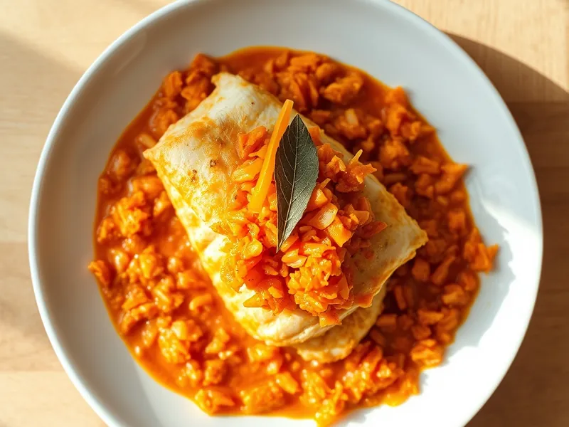

Фото: Иллюстрация ИИ, Cloudflare Workers AI
Рыба под маринадом (минтай с морковью и луком)
Жареный минтай под тёплым маринадом из моркови, лука и томатной пасты
30 мин4 порц.276 ккал на порциюБ 26 · Ж 11 · У 17Русская кухня
Продукты на 4 порц.
- Минтай600 г
- Морковь2 шт
- Лук репчатый2 шт
- Томатная паста2 ст. л.
- Мука пшеничная2 ст. л.
- Растительное масло3 ст. л.
- Вода150 мл
- Сахар1 ч. л.
- Уксус 9%2 ч. л.
- Лавровый лист2 шт
- Соль1 ч. л.
- Перец чёрный молотый2 щеп.
Как готовить
- Нарежьте минтай порционными кусками, посолите и обваляйте в муке.
- Обжарьте рыбу в половине масла на среднем огне по 3-4 минуты с каждой стороны до румяной корочки, выложите в форму или глубокую тарелку.
- Натрите морковь на крупной тёрке, лук нарежьте полукольцами. Обжарьте в оставшемся масле на среднем огне 6-7 минут до мягкости.
- Добавьте томатную пасту, воду, сахар, уксус, лавровый лист, посолите. Тушите на слабом огне 5 минут.
- Залейте рыбу горячим маринадом и дайте постоять 5 минут, чтобы она пропиталась.
Совет. На следующий день, постояв в холодильнике, рыба под маринадом становится ещё вкуснее, её едят и холодной.